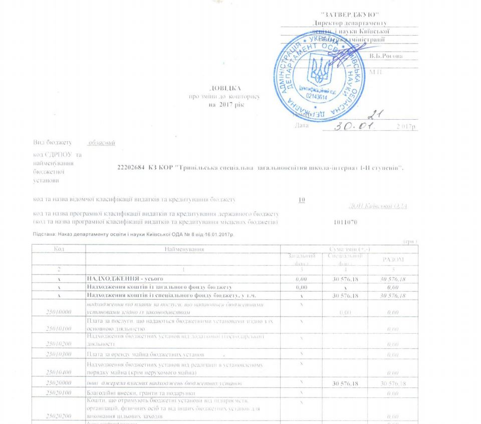
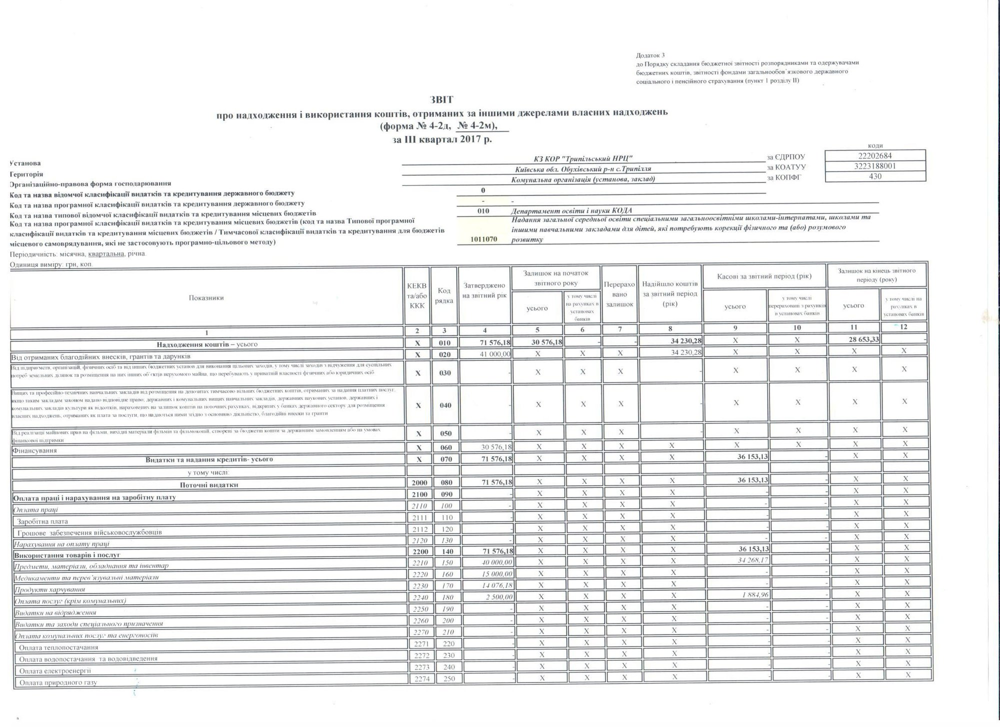
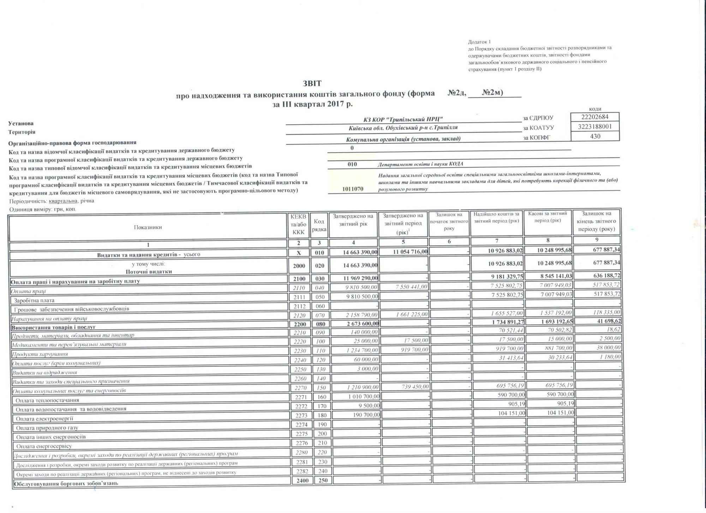

Кошторис, фінансова звітність
ЄДИНИЙ ВЕБ-ПОРТАЛ ВИКОРИСТАННЯ ПУБЛІЧНИХ КОШТІВ (для отримання інформації на порталі, введіть код ЄДРПОУ платника 22202684)Кошториси на 2026р.
КПКВК 0611600 — Здійснення доплат педагогічним працівникам закладів загальної середньої освіти
КПКВК 0611702 — Забезпечення харчуванням учнів закладів загальної середньої освіти
Кошторис на 2019р
Звіт про надходження та використання коштів загального фонду (№2м) за 2019 р.
Кошторис на 2018 р
Звіт про надходження та використання коштів загального фонду (форма №2м) за 2 квартал 2018 р.
Звіт про надходження та використання коштів загального фонду (форма №2д,№2м) за 1 квартал 2018 р.
Довідка про зміни до кошторису 

Звіт про надходження та використання коштів, отриманих за іншими джерелами власних надходжень (форма №4-2д, №4-2м), за 3 квартал 2017р. 

Звіт про надходження та використання коштів загального фонду (форма №2д,№2м) за 3 квартал 2017р. 